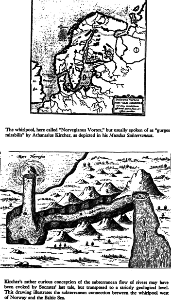

VI. Amlodhi's Quern
The stone which the builders refused
is become the head stone of the corner.
Psalm CXVIII.22; Luke XX.I7
Whosoever shall fall upon that stone shall be broken,
but on whomsoever it shall fall, it will grind him to powder.
Luke XX.18
WITH SUGGESTIVE INSIGHTS from other continents, it is time to take a fresh look at Shakespeare's Gentle Prince, a cultivated, searching intellectual, the glass of fashion and the mold of form in the Danish Court, who was known once upon a time as a personage of no ordinary power, of universal position, and, in the North, as the owner of a formidable mill.
Well trained by the Church, Saxo could write excellent and ornate Latin, a rare achievement in his time. Though inspired by his patriotism to write the great chronicles of his own country, he was in Denmark an isolated if respectable fish in a small provincial pond. He remained oriented to the cultural pole of his times, which was Iceland. From there he had to draw most of his materials even if he helped to Danicize them, as we see in the story of Hamlet where all the features point toward a local dynastic story. But what he drew from Iceland were pieces of already "historical" lore. He could not draw, as did Snorri Sturluson, on the resources of a high position at the very center of Iceland's rich bilingual culture, and on the experience of a wide ranging and adventurous life. He could never have formed, like Snorri, the great project of reorganizing the corpus of pagan and skaldic tradition inside an already Christian frame.
Saxo seems to have known Icelandic fairly well, but not enough to understand the precious and convoluted language of ancient poetry. He was unsure of his bearings and simply arranged his story as best he could even though the name of Hamlet's father, Orvendel (see appendix #2), should have been sufficient to warn him of its derivation from high myth. It is Snorri who provides a piece of decisive information: and it appears, as earlier noted, in chapter 16 of his Skaldskaparmal ("Poetical Diction"), a collection of kenningar, or turns of speech from ancient bards. It is couched in a language that even modern scholars can translate only tentatively. Appendix #5 contains a discussion of the many versions. The one quoted again here is that of Gollancz (p. xi), which appears to be the most carefully translated:
Tis said, sang Snaebjörn, that far out, off yonder ness, the Nine Maids of the Island Mill stir amain the host-cruel skerry-quern — they who in ages past ground Hamlet's meal. The good chieftain furrows the hull's lair with his ship's beaked prow. Here the sea is called Amlodhi's Mill.
The Mill is thus not only very great and ancient, but it must also be central to the original Hamlet story. It reappears in the Skaldskaparmal, where Snorri explains why a kenning for gold is "Frodhi's meal" [1] Frodhi appears in the chronicles, but his name is really an alias of Freyr, one of the great Vanir or Titans of Norse myth. But Snorri, who likes to give things a historical ring as befits his Christian upbringing, fixed his Frodhi to "the same time when Emperor Augustus established peace in the whole world, and when Christ was born." Under King Frodhi the general state of things was similar to that of the Golden Age, and it was called "Frodhi's peace." Saxo follows suit and attributes unsuspectingly a duration of thirty years to this peace. [2]
Now Frodhi happened to be the owner of a huge mill, or quern, that no human strength could budge. Its name was Grotte, "the crusher." We are not told how he got it, it just happened, as in a fairy tale. He traveled around looking for someone who could work it, and in Sweden he recruited two giant maidens, Fenja and Menja, who were able to work the Grotte. It was a magic mill, and Frodhi told them to grind out gold, peace and happiness. So they did. But Frodhi in his greed drove them night and day. He allowed them rest only for so long as it took to recite a certain verse. One night, when everybody else was sleeping, the giantess Menja in her anger stopped work, and sang a dire song.
This obscure prophetic imprecation, as Muellenhoff has shown, is the oldest extant document of skaldic literature, antedating Snorri's tale by far. It contains the biography of the grim sisters:
*Frode! you were not / Wary enough, —
*you friend of men, — / When maids you bought!
At their strength you looked, / And at their fair faces,
But you asked no questions / About their descent.
*Hard was Hrungner / And his father;
Yet was Thjasse / Stronger than they,
And Ide and Orner / Our friends, and
The mountain-giants' brothers, / Who fostered us two.
*Not would Grotte have come / From the mountains gray,
Nor this hard stone / Out from the earth;
The maids of the mountain-giants / Would not thus be grinding
If we two knew / Nothing of the mill.
*Such were our deeds / In former days,
That we heroes brave / Were thought to be.
With spears sharp / Heroes we pierced,
So the gore did run / And our swords grew red.
*Now we are come / To the house of the king,
No one us pities. / Bond-women are we.
Dirt eats our feet / Our limbs are cold,
The peace-giver we turn. / Hard it is at Frode's.
*Now hold shall the hands / The lances hard,
The weapons bloody, — / Wake now, Frode! Wake now, Frode!
If you would listen / To our songs, —
To sayings old.
*Fire I see burn / East of the burg, —
*The war news are awake. / That is called warning.
A host hither / Hastily approaches
To burn the king's / Lofty dwelling.
*No longer you will sit / On the throne of Hleidra
And rule o'er red / Rings and the mill.
Now must we grind / With all our might,
No warmth will we get / From the blood of the slain.
*Now my father's daughter / Bravely turns the mill.
The death of many / Men she sees.
Now broke the large / Braces 'neath the mill,—
*The iron-bound braces. / Let us yet grind!
Let us yet grind! / Yrsa's son
Shall on Frode revenge / Halfdan's death.
He shall Yrsa's / Offspring be named,And yet Yrsa's brother. / Both of us know it.
However obscure the prophecy, it brought its own fulfillment. The maidens ground out for Frodhi's "a sudden host," and that very day Mysingr, the Sea-King, landed and killed Frodhi. Mysingr ("son of the Mouse" — see appendix #6) loaded Grotte on his ship, and with him he also took the giantesses. He ordered them to grind again. But this time they ground out salt.
"And at midnight they asked whether Mysingr were not weary of salt. He bade them grind longer. They had ground but a little while, when down sank the ship,"
"the huge props flew off the bin,
the iron rivets burst,
the shaft tree shivered,
the bin shot down,*the massy mill-stone rent in twain." *[3]
"And from that time there has been a whirlpool in the sea where the water falls through the hole in the mill-stone. It was then that the sea became salt."

Here ends Snorri's tale (appendix #7). Three fundamental and far-reaching themes have been set: the broken mill, the whirlpool, the salt. As for the curse of the miller women, it stands out alone like a megalith abandoned in the landscape. But surprisingly it can also be found, already looking strange, in the world of Homer, two thousand years before. [4]
It is the last night, in the Odyssey (20.103-19, Rouse trans.), which precedes the decisive confrontation. Odysseus has landed in Ithaca and is hiding under Athena's magic spell which protects him from recognition. Just as in Snorri, everybody sleeps. Odysseus prays to Zeus to send him an encouraging sign before the great ordeal.
Straightaway he thundered from shining Olympus, from on high from the place of the clouds; and goodly Odysseus was glad. Moreover, a woman, a grinder at the mill, uttered a voice of omen from within the house hard by, where stood the mills of the shepherd of the people. At these handmills twelve women in all plied their task, making meal of barley and of wheat, the marrow of men. Now all the others were asleep, for they had ground out their task of grain, but one alone rested not yet, being the weakest of all. She now stayed her quern and spake a word, a sign to her Lord (epos pharo sema anakti.) "Father Zeus, who rulest over gods and man, loudly hast thou thundered from the starry sky, yet nowhere is there a cloud to be seen: this is surely a portent thou art showing to some mortal. Fulfil now, I pray thee, even to miserable me, the word that I shall speak. May the wooers, on this day, for the last and latest time make, their sweet feasting in the halls of Odysseus! They that have loosened my knees with cruel toil to grind their barley meal, may they now sup their last!"
"The weakest of all," yet a giant figure in her own right. In the tight and shapely structure of the narrative, the episode is fitted with art, yet it stands out like a cyclopean stone embedded in a house. There are many such things in Homer.

Going back to Grotte, the name has an interesting story. It is still used today in Norwegian for the "axle-block," the round block of wood which fills the hole in the millstone, and in which the end of the mill axle is fixed. In the Faroer as well as in the Shetland dialect, it stands for "the nave in the millstone." The original Sanskrit nabhi covers both "nave" and "navel," and this point should be kept in mind. In the story, it is obviously the nave that counts, for it created a hole when the mill tree sprang out of it, and the whirlpool formed in the hole. But "navel of the sea" was an ancient name for great whirlpools. Gollancz, with sound instinct, saw the connection right away:
Indeed, one cannot help thinking of a possible reference to the marvellous Maelstroem, the greatest of all whirlpools, one of the wonders of the world; Umbilicus maris according to the old geographers, "gurges mirabilis omnium totius orbis terrarum celeberrimus et maximus" as Fr. Athanasius Kircher describes it in his fascinating folio "Mundus Subterraneus." According to Kircher, it was supposed that every whirlpool formed around a central rock: a great cavern opened beneath; down this cavern the water rushed; the whirling was produced as in a basin emptying through a central hole. Kircher gives a curious picture of this theory, with special reference to the Maelstroem. [5]
Clearly, the Mill is not a "chose transitory," as lawyers say in their jargon. It must belong to the permanent equipment of the ancient universe. It recurs all the time, even if its connotations are rarely pleasant. From another corner of memory, there come the lines of Burns' "John Barleycorn":
*They wasted o'er a scorching flame
- The marrow of his bones
But a miller used him worst of allFor he crushed him between two stones.
The mock tragedy of the yearly rural feast is part of the immense lore on fertility rites that Frazer has unfolded, with the ritual lamentations over the death of Tammuz, Adonis, the "Grain-Osiris" of Egypt; and no one would deny that the Tammuz festival was a seasonal ritual celebrating the death and rebirth of vegetation. It has entered the commonplaces of our knowledge. But was this the original meaning? An irresistible preconception leads to the thought that when peasant rites are found tied to vegetation, there is the most elementary and primitive level of myth from which all others derive. It carries, too, its own moral tidings: "if the grain die not . . ," which led on to higher religious thought.
In truly archaic cults, however, such as that of the Ssabians of Harran, reflected also in Ibn Wa'shijja's "Book of Nabataean Agriculture," the death and grinding up of Tammuz is celebrated and lamented by the images of all the planetary gods gathered in the temple of the Sun suspended "between earth and heaven," in the same way as they once cried and lamented over the passing of Jamshyd (or Jambushad as they then called him). This is a strange and unusual note, very un-agrarian, which deserves more careful study.
But this leads back to the Norse myth of the Mill, and in fact to Snorri himself, who in his "Fooling of Gylfi" commented on a verse from the Vafthrudnismal which has been much discussed since. In this ancient poem, the end of Ymer is recounted. Ymer is the "initial" world giant from whose scattered body the world was made. Snorri states that Ymer's blood caused a flood which drowned all giants except Bergelmer, who, with his wife, "betook himself upon his ludr and remained there, and from there the race of giants are descended." The word ludr, as Snaebjörn said, stands for Mill. But in Vafthrudnismal (ch. 35), Odin asks the wise giant Vafthrudner of the oldest event he can think of, and gets this answer: "Countless ages ere the earth was shapen, Bergelmer was born. The first thing I remember is when he ấ var ludr um lagidr" (appendix #8). Rydberg renders the words as "laid on a mill," and understands them as "laid under a millstone." Accordingly, he explains Snaebjörn's lidmeldr, which the great mill grinds, as "limb grist." [6] As will appear later, there is a different interpretation to propose.
The problem, however, keeps turning up. In the Lokasenna (43ff.), Freyr, the original master of Grotte, is brought directly into action. The occasion is a banquet to which Aegir invited the gods. Loke uninvited made his appearance there to mix harm into the ale of the gods and to embitter their pleasure. But when Loke taunts Freyr, Byggver, the faithful retainer, becomes angry on his master's behalf:
"Had I the ancestry
of Ingunar Freyr
and so honoured a seat
know I would grind you
finer than marrow you evil crow,
and crush you limb by limb."
To which Loke replies:
"What little boy is that
whom I see wag his tail
and eat like a parasite?
Near Freyr's ears
always you areand clatter 'neath the millstone."
There are several more clues which hint that this mill upon which Bergelmer was "heaved" was a very distinct if unattractive mythological feature, and they cannot be dealt with here. But if it should be remarked that Bergelmer was not in a state to produce offspring for the giants, if he really was laid under the millstone, there is also an example from Mexico, the "jewel-bone" or "sacrificial bone" which Xolotl or Quetzalcouatl procures from the "underworld," bringing it to Tamoanchan (the so-called "House of descending"). There, the goddess Ciua couatl or Quilaztli grinds the precious bone on the grindstone, and the ground substance is put into the jewel bowl (chalchiuhapaztli). Several gods maltreat themselves, making blood flow from their penises on the "meal" Out of this mixture mankind is fashioned.
These stories may not be in exquisite taste, but at least they are grotesque and contorted enough to rid us of reliance on the natural or intuitive understanding of artless tales sung by rustics dancing on the green. Real cosmological similes are anything but intuitive.
One question remains from this discussion. Who was Snaebjôrn, that dim figure, a few of whose lines have revealed so much? The scholars have gone searching, and have unearthed a veritable treasure in the ancient "Book of Iceland Settlements." It links the poet with the first discovery of America. In that book, writes Gollancz:
There is a vivid picture of a tenth-century Arctic adventurer, Snaebjôrn by name, who went on a perilous expedition to find the unknown land, "Gunnbjôrn's Reef," after having wrought vengeance, as became a chivalrous gentleman of the period, on the murderer of a fair kinswoman. It is generally accepted, and there can be little doubt, that this Snaebjôrn is identical with the poet Snaebjôrn.
His family history is not without interest. His great-grandfather, Eywind the Easterling, so called because he had come to the Hebrides from Sweden, married the daughter of Cearbhall, Lord of Ossory, who ruled as King of Dublin from 882 to 888, "one of the principal sovereigns of Europe at the time when Iceland was peopled by the noblemen and others who fled from the tyranny of Harold Harfagr." Cearbhall was descended from Connla, the grandson of Crimhthann Cosgach, the victorious King of Ireland, who is said to have flourished about a century before the Christian era. Lann or Flann, the half-sister of Cearbhall, was married to Malachy I, King of Ireland, whose daughter Cearbhall had married. Flann was the mother of King Sionna and of the Lady Gormflaith, whom a cruel fate pursued; a king's daughter, the wife of three kings, (she was) forced at last to beg for bread from door to door. About the date of Snaebjörn's arctic expedition (circa 980), his cousin, Ari Marson, is said to have landed on "White Man's Land," or "Great Iceland," — that part of the coast of North America which extends from Chesapeake Bay, including North and South Carolina, Georgia, and Florida, and became famous as one of the earliest discoverers of the New World. [7]
Thus Snaebjôrn, as a member of an Irish royal family, typifies the mutual influence of Celtic and Scandinavian culture, between A.D. 800 and 1,000, that influence which has been traced into the Eddic songs by Vigfusson in his Corpus Poeticum Boreale.
The Hamlet story itself typifies that exchange. For an earlier and simpler form of it may have been brought to Iceland from Ireland, whither the Vikings had originally taken the story of the great Orvendel's son. This places Hamlet within the circle not only of Norse tradition, but of that prodigious treasury of archaic myth which is Celtic Ireland, from which many lines have been traced to the Near East. The universality of the Hamlet figure becomes more understandable.